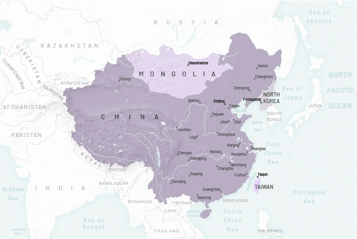
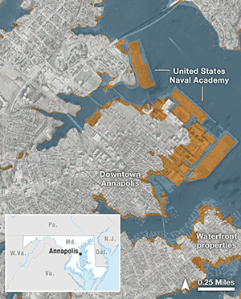
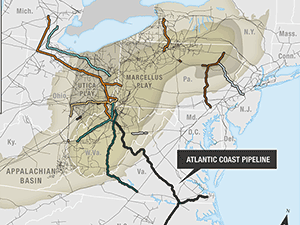
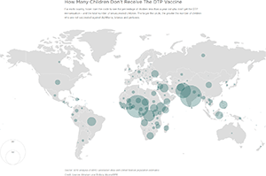
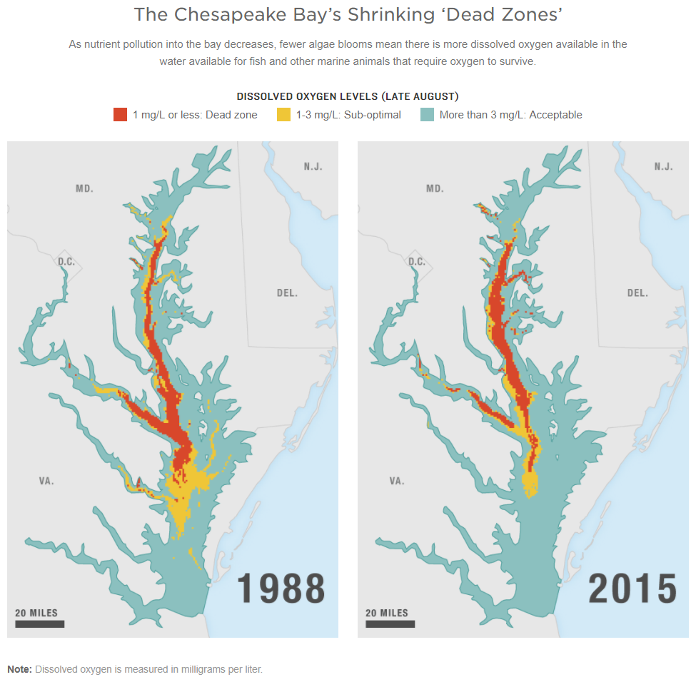
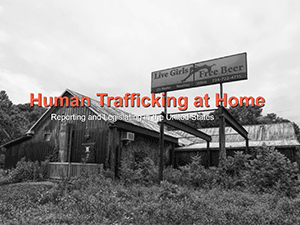
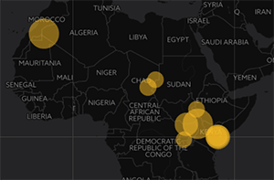
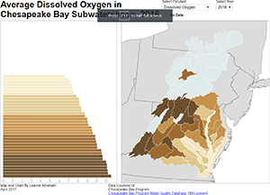
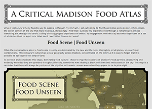

Work

World Regional Geography

Mapping Flooding Risk

Natural Gas Building Boom Fuels Climate Worries, Enrages Landowners

Global Vaccination Rates

The Chesapeake Bay’s Shrinking ‘Dead Zones’

Human Trafficking at Home

An Interactive Exploration of Refugee Camp Populations

D3 Visualization of Pollutants in the Chesapeake Bay

A Critical Madison Food Atlas

Turkish Bike Tour

Online Etch Map

Illuminating Crime

San Fernando Valley Map